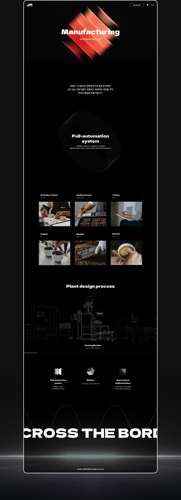
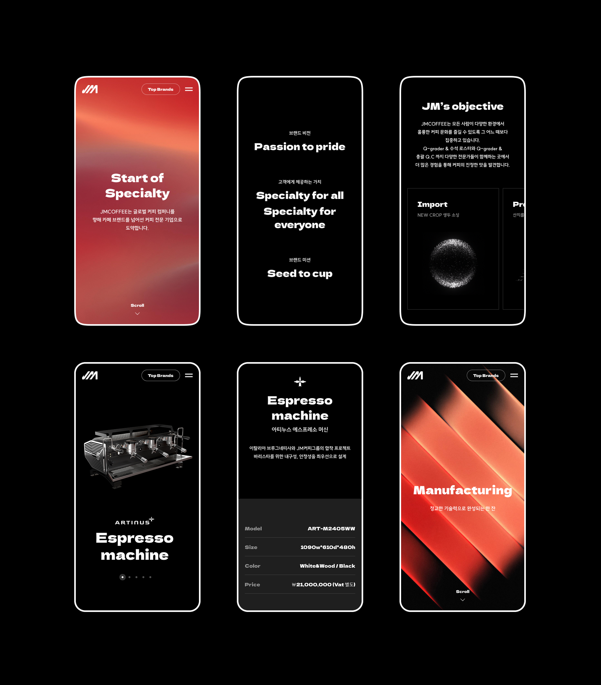
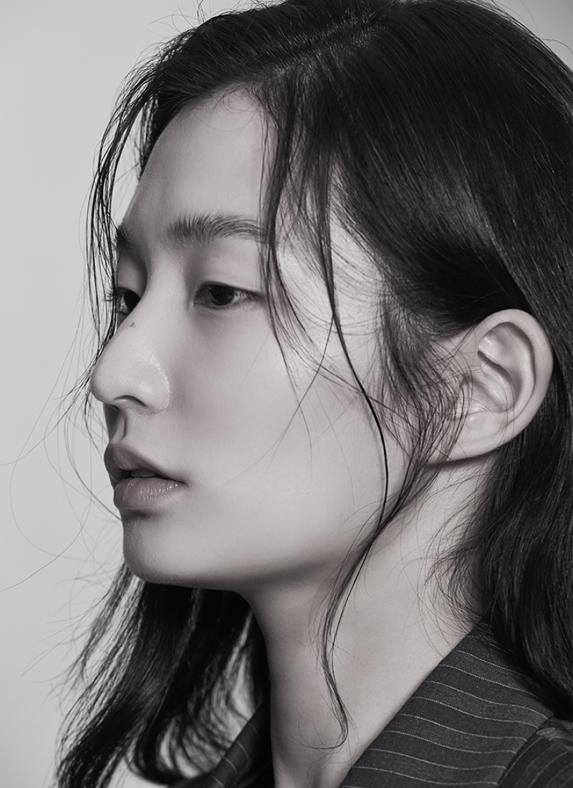

Jm coffee
-
담당 업무
Frontend PL
-
기술 스택
WordPress, JavaScript, Spline, HTML5, CSS3, PHP
- 사이트 바로가기
Introduction
JM COFFEE 그룹의 홈페이지 구축 프로젝트에서 프론트엔드 프로젝트 리더로 참여하여,
사이트의 전반적인 프론트엔드 개발을 주도했습니다.
Spline을 활용한 3D 콘텐츠와 GSAP 기반 인터랙션 애니메이션을 적용하여
생동감 있고 몰입도 높은 사용자 경험을 구현했으며,
다양한 디바이스에서의 반응형 웹, 웹 접근성, 크로스브라우징을 고려하여 작업했습니다.
The vision
영상 및 고용량 3D 콘텐츠가 많은 특성을 고려해 사이트 성능 최적화
CSS/JS 경량화, lazy loading, 콘텐츠 압축 등에 집중하여,
로딩 속도 개선과 안정적인 사용자 환경을 달성했습니다.

Award
해당 프로젝트는 디자인과 기술 구현의 우수성을 인정받아
GDWEB WINNER PRIZE에 선정되었습니다.

Next Work

Highzium